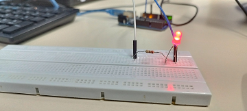

Pisca LED com Arduino
O objetivo deste experimento foi programar o Arduino para piscar um LED. A simulação no Tinkercad e o teste prático foram realizados com sucesso.


Esses são alguns experimentos realizados com Arduino e simulação no Tinkercad.
Neste experimento, montamos um circuito simples utilizando a plataforma de simulação Tinkercad para testar a conexão de componentes básicos. Abaixo estão a simulação e a foto do Arduino com o teste prático.
O objetivo deste experimento foi programar o Arduino para piscar um LED. A simulação no Tinkercad e o teste prático foram realizados com sucesso.
Aqui está o código utilizado na IDE do Arduino para controlar o LED. Abaixo, o print do código e a foto do Arduino com o LED ligado.